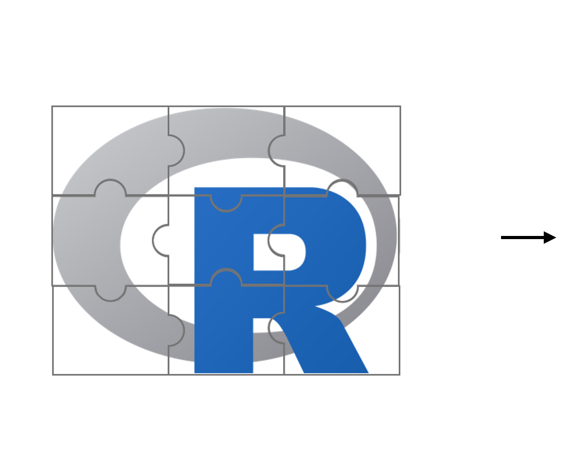

R Consortium HTA Working Group
2nd meeting, 27 November 2024
Attendees
- Ion Agirrezabal
- Gregory Chen
- Niall Davison
- Natalie Dennis
- Timothy Disher
- Jack Ettinger
- Katya Galactionova
- loana Gulas
- Lena Hubig
- Inkyu Kim
- Sven Klijn
- Lea
- Maria Lorenzi
- Stephen McCawille
- Niccolò Morgante
- Dominic Muston
- Jay Park
- Anders Gorst-Rasmussen
- Joseph Rickert
- Rongzhe
- Yevgeniy Samyshkin
- Robert Smith
- Joshua Soboil
- Frank Weber
- Jack Williams
- Yinan Wul
- Zuoyi Zhang
Meeting Recording
The meting was recorded and the video is available.
Video timeline:
- 7:10 Meeting Starts - Opening remarks and news
- 17:00 Workstream 1 - Overview and issues
- 21:45 Open discussion - Comments from Audience
- 48:17 Workstream 2 - Overview and issues
- 1:00:46 Meeting ends
The next meeting will be in January 2025
The meeting followed the agenda below.
Agenda
- Brief recap ~5 mins
- Workstream 1 (Anders, Dominic) ~40 mins
- Workstream 2 (Gregory, Joe) ~10 mins
- Closing ~5 mins
Brief Recap: Vision for the working group
Evolving policy landscape as a catalyst for a more unified approach to HTA analytics through R
From a heterogenous landscape…

…to R as a platform to connect diverse perspectives on HTA analytics…
- Improved efficiency and transparency
- Reduced duplication
- Harmonized methodologies
..accelerating the delivery of innovative treatments to patients
Workstream 1: Recap
Stakeholder and landscape mapping and opportunity assessment
What is the workstream solving for?
R is an established tool in HTA work but the degree and type of adoption varies significantly across stakeholders. There is a need for strengthening the shared understanding of challenges and solutions to accelerate the use of R in HTA production work
Objectives
Map of stakeholders, landscape, and opportunities to guide future R-related initiatives and workstreams
Proposed activities
- Stakeholder identification
- Landscape and opportunity assessment (focusing on R usage, overlaps, and perceived gaps)
- Roadmap (outlining key connections and potential collaborative projects)
Proposed outcome(s)
Conference presentations and/or whitepaper(s)
EU HTA Stakeholder Network Meeting 29th November 2024
- Anders representing European Federation of Statisticians in the Pharmaceutical Industry (EFSPI) in the European Commission EU HTA Stakeholder Network
- A construct within the EU HTA regulation
- Supporting the work of the Coordination Group (CG) and its’ subgroups
- Currently meeting twice annually
- Meeting 29th November 2024 in Brussels
- EFSPI presentation: Open-source statistical code and its potential for EU HTA JCA
Relevance for R Consortium HTA WG?
- In the EFSPI presentation, RC-HTAWG is framed as a hub to connect across stakeholders and perspectives
- Call to action: dialogue with CG and national bodies to catalyze development and impact direction
Discussion
A first look at drivers and obstacles of broader adoption of R for HTA
- To better target workstream 1 efforts before starting “for real”, we want a high-level idea of different stakeholder perspectives
- On the next slide, we have outlined some crude hypotheses - we want you to challenge them!
- (we will take this to RC-HTAWG Github Discussions page afterwards, to continue offline)
Hypotheses for discussion
Anticipated value driver/obstacles by stakeholder to broader adoption of R for HTA analytics
- Do you agree with the below?
- What are other relevant hypotheses?
- Commonalities among drivers or obstacles?
| Stakeholder | Anticipated driver | Anticipated obstacle |
|---|---|---|
| Pharma | Shape more efficient and robust analysis pipelines | Needs substantial investments with questionable return |
| CROs | Improve efficiency and consistency between clients | Increased challenges with differentiation; gained efficiencies may benefit pharma more |
| Academia | Push novel methodology into ‘production’ more easily | More contraints (new packages having to interact with standard packages) |
| HTA bodies | Increase quality & consistency, reduce assessor burden | Creating unwarranted or difficult-to-control precedents |
Workstream 2: Recap
Workstream 2: Update
Closing
- Reminder: Introduce yourself briefly, by updating the comment on the github issue that you used to sign up
- Reminder: Raise new github issues and use the comment functionality to drive discussion between meetings
- Proposed meeting time in 2025: Thursday in the 3rd week of the month, 17:00-18:00 CET